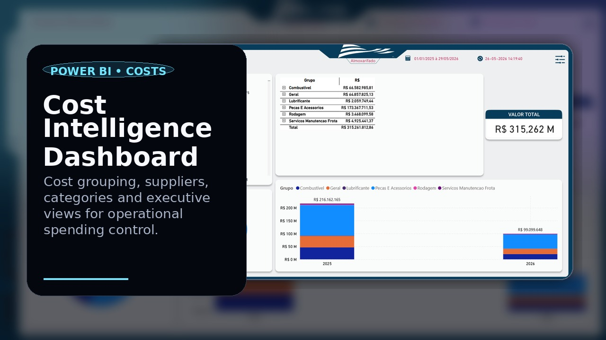
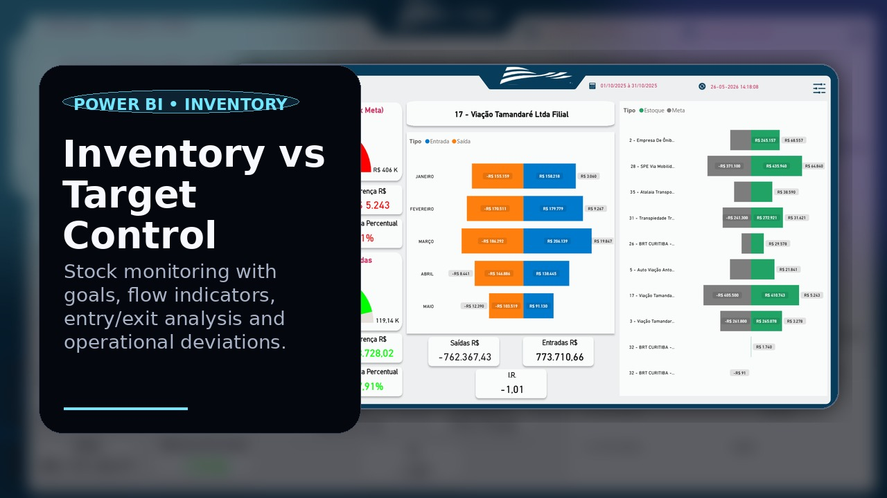
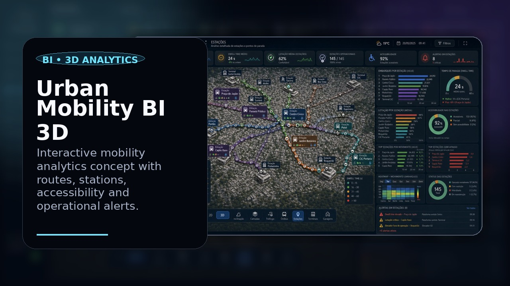
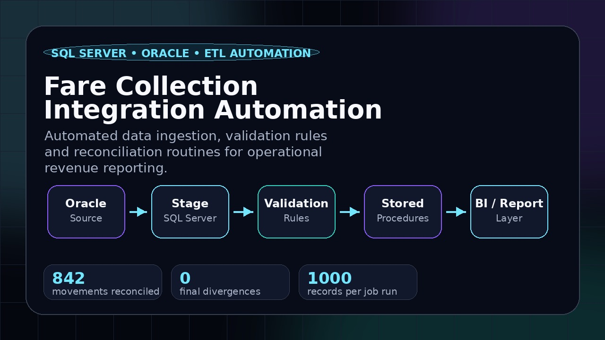
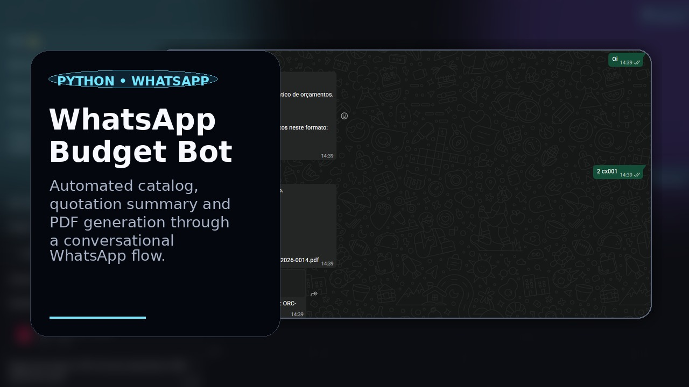

Senior Data Engineer • ETL & Data Pipelines • BI Automation
I build reliable data products that turn operations into decisions.
I work across Python, SQL, Power BI and automation to design pipelines, dashboards and analytics workflows that are clear, maintainable and useful for real business decisions.
About
Data work with engineering discipline and business context.
I am Matheus Rodrigues, a data professional focused on transforming fragmented information into reliable analytics products. My work combines data engineering, business intelligence and automation to help teams understand what is happening, where the bottlenecks are and what decisions should come next.
My strongest areas are Python, SQL, Power BI, data modeling, process automation and integrations. I like projects where the result is not just a beautiful dashboard, but a sustainable data flow that people can trust.
How I help
From raw data to operational intelligence.
Data pipelines
Extraction, transformation, validation and delivery of data with clear rules and maintainable routines.
Business intelligence
Power BI dashboards and data models designed for managers, operations and financial monitoring.
SQL & data modeling
Queries, stored procedures, analytical views and database structures aligned with reporting needs.
Automation
Python, RPA and integration flows that reduce manual processes and improve operational consistency.
Selected projects
Data, dashboards and automation systems.
A selection of recent dashboards, automation flows and data engineering projects. Sensitive operational details should be anonymized before public sharing.

Power BI • Cost Analytics
Cost Intelligence Dashboard
Supplier, category and spending analysis for operational cost control.

Power BI • Operations
Inventory vs Target Control
Stock goals, inventory flow and deviation tracking.

Analytics Portal
BI Portal
Centralized access to dashboards, reports and business metrics.

BI • 3D Analytics
Urban Mobility BI 3D
Routes, stations, alerts and accessibility indicators in a 3D BI view.

Oracle • SQL Server • ETL
Fare Collection Integration Automation
Automated ingestion, validation and reconciliation for revenue reporting.

Python • Automation
WhatsApp Budget Bot
Catalog guidance, quote summary and PDF generation by chat.
Stack
Tools I use to build data solutions.
Contact
Let’s build something useful with your data.
Open to conversations about data engineering, Power BI, ETL routines, SQL, automation and analytics projects.